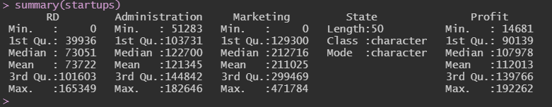

Ris used everywhere espically in Data Science. As Part of our Data Analytics using R & Python Course, our mentor Dr.Prashobhan Palakkeel has given an assignment to download a dataset to visualize the data and do different types of analysis like Factor Analysis, Multivariate Analysis, etc using R and Python. I have downloaded an dataset named "50_Startups" from kagle and did the Data Visualisation, Exploratory Data Analysis, Kaiser-Meyer-Olkin Statistics, Bartlett's Test of Sphericity, Simple Linear Regression, Multiple Linear Regression using R Programming. In this blog post, I will be explaining the results that I have got.
About the Dataset
The Name of the dataset is "50_Startups" and I have downloaded the dataset from Kagle. This dataset has data collected from New York, California and Florida about 50 business Startups "17 in each state".
The variables used in the dataset are Profit, R&D spending, Administration Spending, and Marketing Spending.
Analysis of Dataset
The First process after downloading the data set is to read the dataset in R to get more insights about the dataset.
startups <- read.csv("C:/Users/Prabhu/Downloads/50_Startups.csv", header=TRUE)
print(startups)
After Reading, I used the code below to get the summary of the dataset.
variable.names(startups)
summary(startups) There were 4 numerical variables (Research and development, Administration, Profit, Marketing) in the dataset. Using the code below, I have visualized each variable using 4 different plots like boxplot, histogram, bar graph, etc.
plot(startups$RD, main="Research & Development") #Plot
hist(startups$RD, main="Research & Development") #histogram
boxplot(startups$RD, main="Research & Development") #boxplot
barplot(startups$RD, main="Research & Development") #barplot
plot(startups$Administration, main="Administration")
hist(startups$Administration, main="Administration") #histogram
boxplot(startups$Administration, main="Administration") #boxplot
barplot(startups$Administration, main="Administration") #barplot
plot(startups$Marketing, main="Marketing")
hist(startups$Marketing, main="Marketing") #histogram
boxplot(startups$Marketing, main="Marketing") #boxplot
barplot(startups$Marketing, main="Marketing") #barplot
plot(startups$Profit, main="Profit")
hist(startups$Profit, main="Profit") #histogram
boxplot(startups$Profit, main="Profit") #boxplot
barplot(startups$Profit, main="Profit") #barplotThe First analysis that I did was Exploratory Factor Analysis.
ndata = startups[,1:3]
print(ndata)
r = cor(ndata)
KMO(ndata) After Factor Analysis, I have did the Simple Linear Regression using variables Profit and Marketing.
smodel <- lm(Profit ~ Marketing, data=startups)
summary(smodel)After Simple Linear Regression, I have did the Multiple Linear Regression using variables Profit as independent variable and Administration, Research and Development, Marketing as dependent variable
mmodel <- lm(Profit ~ RD + Administration + Marketing + State, data=startups)
summary(mmodel)Output Screenshots & Interpretation
The Summary of the 50 Startups dataset
Output of Factor Analysis

Output of Simple Linear Regression

Output of Multiple Linear Regression

Output of Confint of Multiple Linear Regression